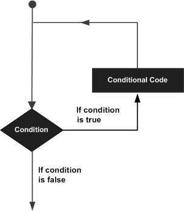

There may be a situation when you need to execute a block of code several number of times. In general statements are executed sequentially: The first statement in a function is executed first, followed by the second, and so on.
Programming languages provide various control structures that allow for more complicated execution paths.
A loop statement allows us to execute a statement or group of statements multiple times. Following is the general from of a loop statement in most of the programming languages −

Swift programming language provides the following kinds of loop to handle looping requirements. Click the following links to check their detail.
| S.No | Loop Type & Description |
|---|---|
| 1 | for-in
This loop performs a set of statements for each item in a range, sequence, collection, or progression. |
| 2 | for loop
Executes a sequence of statements multiple times and abbreviates the code that manages the loop variable. |
| 3 | while loop
Repeats a statement or group of statements while a given condition is true. It tests the condition before executing the loop body. |
| 4 | do...while loop
Like a while statement, except that it tests the condition at the end of the loop body. |
Loop control statements change execution from its normal sequence. When execution leaves a scope, all automatic objects that were created in that scope are destroyed.
Swift supports the following control statements. Click the following links to check their detail.
| S.No | Control Statement & Description |
|---|---|
| 1 | continue statement
This statement tells a loop to stop what it is doing and start again at the beginning of the next iteration through the loop. |
| 2 | break statement
Terminates the loop statement and transfers execution to the statement immediately following the loop. |
| 3 | fallthrough statement
The fallthrough statement simulates the behavior of swift switch to C-style switch. |